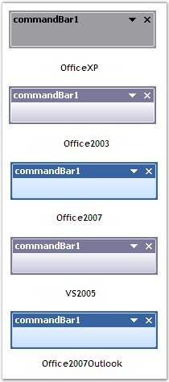
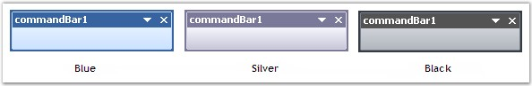

This section discusses the themes and visual styles settings of the CommandBar control.
Themes
Themes define the look and feel of the CommandBar control. They can be set using the property given below.
|
CommandBarController Property |
Description |
|
ThemesEnabled |
Specifies whether XP themes should be used for the CommandBars. |
|
[C#]
this.commandBarController1.ThemesEnabled=true; |
|
[VB.NET]
Me.commandBarController1.ThemesEnabled=True |
Figure 31: Themed Appearance of CommandBar Control
Visual Styles
Visual Styles enhance the appearance of the CommandBar control and can be set using the property given below.
|
CommandBarController Property |
Description |
|
Style |
Specifies the visual style of the CommandBar. It includes the options given below.
OfficeXP, Office2003, Office2007, VS2005 and Office2007Outlook. |
|
[C#]
this.commandBarController1.ThemesEnabled = true; this.commandBarController1.Style = Syncfusion.Windows.Forms.VisualStyle.OfficeXP; |
|
[VB.NET]
Me.commandBarController1.ThemesEnabled=True Me.commandBarController1.Style = Syncfusion.Windows.Forms.VisualStyle.OfficeXP |

Figure 32: Visual Styles
 Note : For the Office2003 and VS2005 styles
to take effect, the ThemesEnabled property should be set to 'False'.
Note : For the Office2003 and VS2005 styles
to take effect, the ThemesEnabled property should be set to 'False'.
Office 2007 Theme
CommandBarController provides the new Microsoft Office 2007 style in different color schemes, to enhance the appearance of the CommandBar control. Office 2007 color schemes can be enabled using the Office2007Theme property.
|
CommandBarController Property |
Description |
|
Office2007Theme |
Specifies the color scheme for the Office 2007 visual style. It includes the options given below.
Blue, Silver, Black and Managed. |
|
[C#]
this.commandBarController1.Style = Syncfusion.Windows.Forms.VisualStyle.Office2007Outlook; this.commandBarController1.Office2007Theme = Syncfusion.Windows.Forms.Office2007ColorScheme.Blue; |
|
[VB.NET]
Me.commandBarController1.Style = Syncfusion.Windows.Forms.VisualStyle.Office2007Outlook Me.commandBarController1.Office2007Theme = Syncfusion.Windows.Forms.Office2007ColorScheme.Blue |

Figure 33: Office 2007 Themes
Note:
The Style property must be set to 'Office2007' or 'Office2007Outlook' to
get the Office 2007 theme effect.